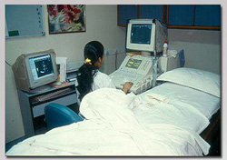

| S.R. MEHTA Hospital | HOME ABOUT US SERVICE DOCTORS CONTACT US |
|
Welcome to S.R. MEHTA Hospital Best Medical & Health care Needs to Our Patients Smt. S. R. Mehta & Sir K. P. Cardiac Institute (SRMKPCI) is a unique hospital started in May 1999 under the pioneering and enterprising chairmanship of Mr. M. C. Shah, a well known city industrialist and philanthropist. In view of the rising incidence of heart diseases in our population, he felt the need in the metropolis of Mumbai for a specialized heart hospital to render the high quality and super-specialised care that patients with heart diseases require. With this vision, the Smt. Sushilaben Ramniklal Mehta & Sir Kikabhai Premchand Cardiac Institute was established. |
 |
|
Address Smt S R Mehta & Sir K P Cardiac Institute Blood Centre road no. 31, near gandhi market, plot 96, Kings Cir, Sion, Mumbai, Maharashtra 400022 |